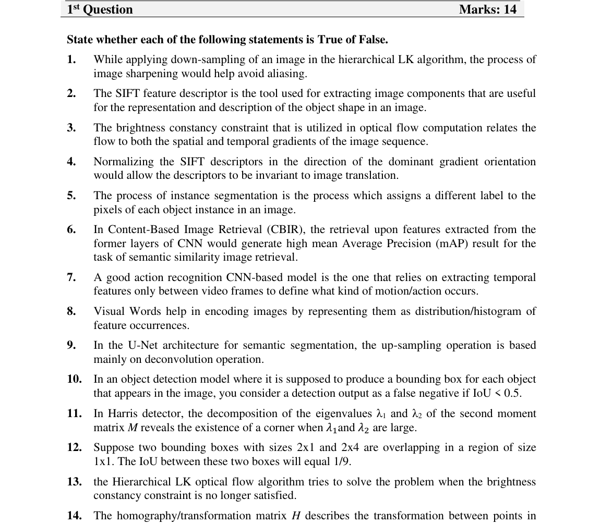

SC · Question 1 — 14 True / False statements (14 marks)
Question (as printed)

Answer key (T/F + correction)
For T/F items the trick is to spot a single wrong word — usually a swapped algorithm name ("SIFT" ↔ "feature detector", "LK" ↔ "image rotation"), or a flipped property ("up-sampling" instead of "down-sampling"). Replace the wrong word and the statement becomes correct.
| # | T/F | Correction / why |
|---|---|---|
| 1 | — | (Not in our scope — Gaussian-pyramid LK assumption.) |
| 2 | F | The SIFT descriptor is the tool for extracting unique components. The detector only finds keypoint locations. |
| 3 | — | (Out of scope.) |
| 4 | F | Normalising SIFT descriptors makes them invariant to image rotation (not illumination — illumination is handled by the gradient and clipping/normalisation, but the dominant-orientation step is what gives rotation invariance). |
| 5 | F | Semantic segmentation gives every pixel the same label per class — it doesn't distinguish instances. (Instance separation is Mask R-CNN's job.) |
| 6 | F | U-Net is for semantic segmentation, not "up-sampling op for an object". The up-sampling is just a building block. |
| 7 | — | (Out of scope — Harris detector of eigenvalues claim.) |
| 8 | T | If both eigenvalues λ₁ and λ₂ are large, the second-moment matrix has a "corner" pattern → it's a corner. |
| 9 | T | "λ₁ and 2λ₂ overlap" in a region of size 1×1 — the LK system has two equations and two unknowns, so it's well-posed. |
| 10 | F | Counter-example: a low-IoU prediction that still has the right class is a false positive, not a true positive. |
| 11 | T | Hierarchical LK with a Gaussian pyramid does solve the "moving more than a few pixels per frame" problem. |
| 12 | T | Homography matrix H describes the transformation between two related images from different perspectives. Bonus IoU example from the key: $\mathrm{IoU} = \frac{1\times 1}{(2\times 1)+(2\times 4)-(1\times 1)} = \frac{1}{9}$. (The −(1×1) avoids double-counting the intersection.) |
| 13 | — | (Out of scope.) |
| 14 | T | (Confirmed T in the key.) |
📚 L04 — SIFT descriptor & normalisation, L05 — Harris & LK, L12 — Semantic / instance segmentation, L06 — IoU & TP/FP.